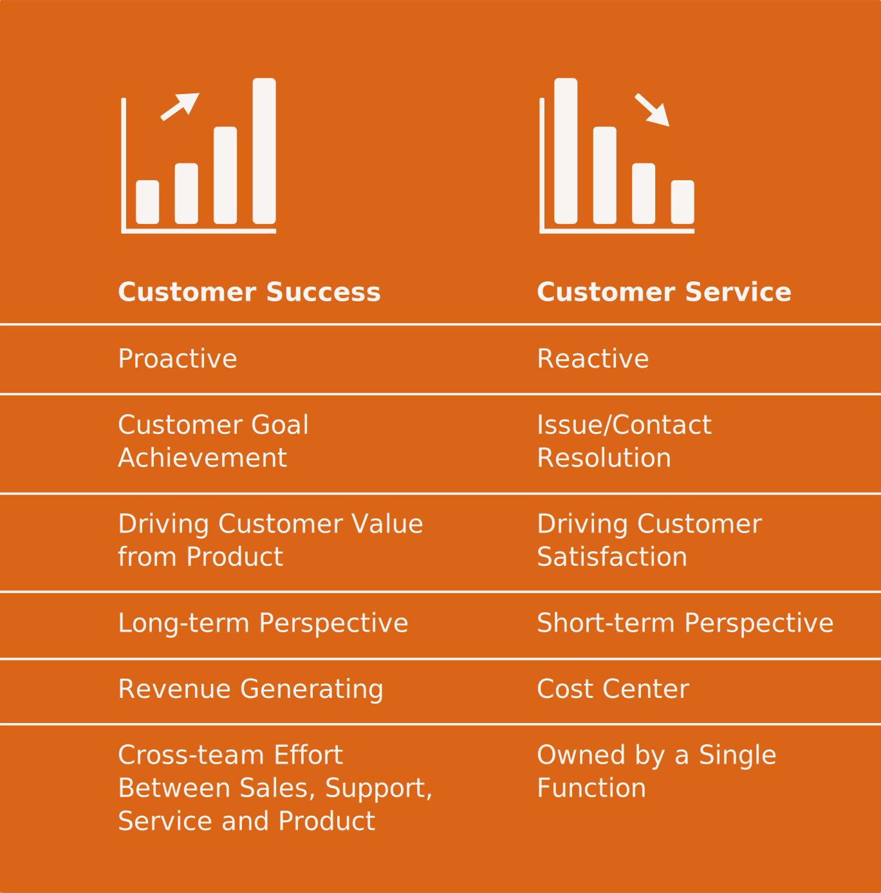

Source: https://www.pexels.com/de-de/foto/frau-buro-arbeiten-tisch-8867434/
What is the main reason why companies exist? Is it to create profits? To provide livelihood to a community? At bliro we believe that companies only exist for one major reason: to serve their customers. Or in more in Peter Drucker’s more poetic terms:
“Business enterprises […] are organs of society. They do not exist for their own sake, but to fulfill a specific social purpose and to satisfy a specific need of a society, a community, or individuals.” -- Peter Drucker
Peter Drucker, who is often referred to as one of the founders of modern management, said that businesses exist to fulfill a special social purpose and to satisfy a specific need of a society. The society in the context of a business takes shape in the form of the business's customers. So in the end for every business it should be about satisfying a specific need of its customers.
But how do you know what that specific need of your customers is? A good way to answer this question is to take a look at what (among other features) differentiates companies in the B2C and B2B sector. Whereas B2C companies sell to end customers like you and me, B2B companies sell their products to other companies. Nothing new so far. But how do companies of both types know the specific needs of their customers? By gathering A LOT of product and market relevant data. In B2C internationally operating and dominant social media platforms built their whole business models on gathering data about us customers. This data is used to answer questions as: which products do consumers want and how can we sell it to them?
In the B2B context, where companies are often specialised in a certain niche, products can be complex. This complexity comes with more specific customer needs that are more difficult to identify. And unfortunately for them, there are no social media platforms for companies where customer data could be collected at sufficient scale.
To help understand customers better, a new role is gaining traction in B2B Software: The Customer Success Manager or CSM. A CSM’s role is to understand the product or service their company offers and utilize it to make their customers as successful as possible. In comparison to Customer Service Roles, CSMs are more like product-driven consultants. They act proactively and should always keep a long-term perspective in mind.

Source: https://openviewpartners.com/blog/customer-success-vs-customer-service/
Especially in Software-as-a-Service (SAAS) companies CSMs have become more and more important. An Invesp study found that a staggering 50% of paying customers log in to their SAAS service less than once a month.[1] It is hard to keep customers engaged if they don’t see benefit in the product. CSMs work to keep those benefits on top of mind. Accordingly, CSMs spend a lot of time working together with their customers. They learn about problems and needs and are supposed to share what they learn with their colleagues, who depend on raw qualitative customer feedback - a rare resource in the B2B environment. At bliro we wanted to learn how CSMs actually work and how the insight about a single customer is actually generated and shared within an organization. Therefore we conducted primary market research with a few dozen CSMs from the B2B Software Industry in the DACH region (Germany, Austria, Switzerland) using qualitative interviews and surveys. Today we would like to share some of the main outcomes that were retrieved in the latest survey we conducted with CSMs in October 2021.
Sharing Insights - A lot of manual work and no perfect tool
We were eager to learn how much time CSMs actually spend on post processing and documenting customer conversations. In our view this is one of the most important steps to share raw customer feedback inside the company. Based on qualitative interviews we assumed that CSMs spend around 20-30% of their time on post processing and documenting and that they mostly share insights with their own team, sales and product.
We defined post processing and documenting as: (1) taking and revising notes during and after customer calls and (2) sharing insights from calls with different stakeholders. The survey shows that on average CSMs spend more than 8 hours per week on post processing and documenting. 1 in 10 interviewees even spends between 15 and 20 hours per week.
Mostly they share insights from customer calls with (1) Sales (82,6%), (2) Product Management (78.3%) (3) and Customer Success / Account Management (78,3%). Other important stakeholders are Product Marketing, C-Level and Business Development.
Interestingly enough no single go-to tool could be identified that CSMs use to document and share customer feedback. Among the most used tools are Gainsight, different CRM tools and note taking tools like OneNote, MS Word, Google Docs or just pen and paper. Generating and sharing insights from customer conversations still seems to be a very manual and time intensive process with lots of different tools being used. The question of how to document customer conversations and share insights most effectively remains unanswered.
Receiving Insights - Lack of good quality data throughout the customer success process
Now CSMs are not only responsible for sharing information. They are also on the receiving end of data from other roles. Obviously the most important information supplier is the sales department (87% of the respondents receive information from sales). They usually attend to the customer until the deal is closed and the contract signed. Then the customer, and with them a lot of important information that was tracked in CRM and other tools, is handed over to the Customer Success Team.
Interestingly 52,1% of CSMs are not happy with the quality and amount of information that they receive by pre-sales during the handover. Similarly 52,2% of all respondents would like to have more information about their customers at all times and not just at the handover. Especially during the handover process a lack of good quality data about the customer can lead to friction. Communication and sharing of information between the Sales and Customer Success Teams is key to serve the client effectively.
Not surprisingly 78,2% of all respondents think that Customer Success and Account Management are the most important customer facing roles when it comes to collecting and sharing insights about customers (this view might be a bit biased considering that only CSMs answered this survey ;) ).
Outlook
The claim that Customer Success Managers, similar to other customer facing roles in B2B companies, are the eyes and ears of a company is probably indisputable. Nevertheless this survey also shows that CSMs spend more than one day per week on post processing and documenting customer conversations. On the other side, according to a study by productplan 25% of Product Managers say that setting roadmap priorities without customer feedback is their most pressing issue. [2]
CSMs are the eyes and ears of a company and already spend more than a day per week on post processing and documenting customer conversations. But Product Managers still complain about not having enough customer feedback. Something seems to be out of balance here.
We at bliro want to tackle this problem. We aim to reduce documentation effort for our users in customer facing departments and share insights from customer conversations directly with the right stakeholders. Thereby we can reduce the manual documentation effort and increase the understanding about the customer in non-customer facing departments simultaneously. If you want to test our current prototype, feel free to send an email to hello@bliro.io.
We are happy to share all findings of this survey. If you are interested in a report that contains deeper analysis and graphics, then write a short email to: hello@bliro.io.